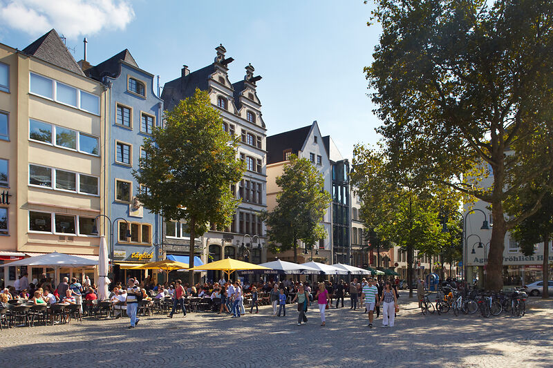
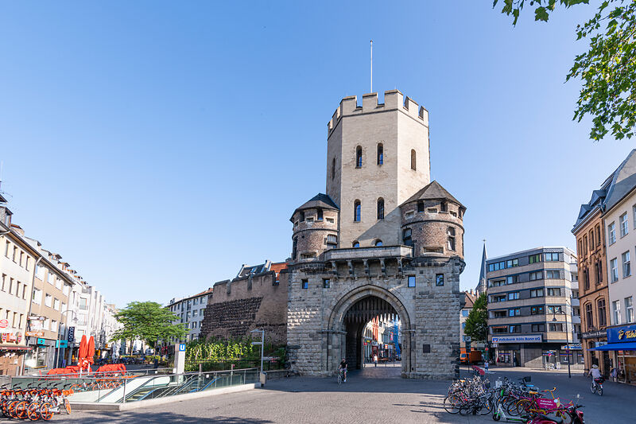
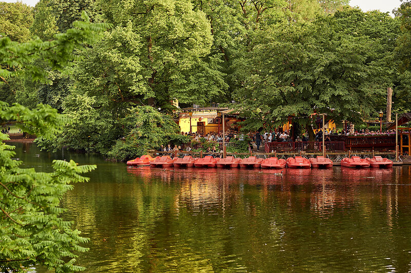
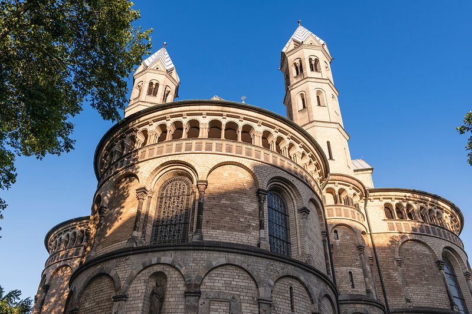
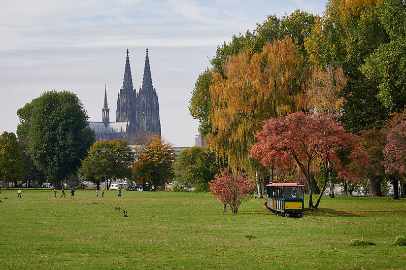

<style>
:root {
  --color-current: #1E8CC8;
  --color-link-hover: #24A7EE;
}

#intro {
  background-image: url(img/cologne.jpg);
}
</style>

<!--==========================
  Header
============================-->
<header id="header">
  <div class="container">
    <div id="logo" class="pull-left">
      <a href="#intro" class="scrollto"></a>
    </div>
    <nav id="nav-menu-container">
      <ul class="nav-menu">
        <li><a href="#about">About</a></li>
        <li><a href="#dates">Dates</a></li>
        <li><a href="#call">Call</a></li>
        <li><a href="#venue">Venue</a></li>
        <li><a href="#organization">Organization</a></li>
      </ul>
    </nav><!-- #nav-menu-container -->
  </div>
</header><!-- #header -->

<!--==========================
  Intro Section
============================-->
<section id="intro">
  <div class="intro-container">
    
    <p>5th International Conference on the <b>D</b>esign of <b>E</b>xperimental <b>S</b>earch &amp; <b>I</b>nformation <b>RE</b>trieval <b>S</b>ystems</p>
    <p>The conference for discussing visionary ideas in search and retrieval systems</p>
    <p>17&ndash;19 March 2027, Cologne, Germany</p>
    <br><br>
    <a href="#about" class="scrollto"><i class="fas fa-arrow-alt-circle-down"></i></a>
  </div>
</section>

<main id="main">
  <div class="image-credits">Photo © Thomas Wolf, <a href="http://www.foto-tw.de/">www.foto-tw.de</a> (<a href="https://creativecommons.org/licenses/by-sa/3.0/de/deed.de">CC BY-SA 3.0 DE</a>)</div>

  <!--==========================
    About Section
  ============================-->
  <section id="about">
    <div class="container">
      <div class="section-header"><h2>About</h2></div>
      <p>Technology is transforming the way we search for, consume, and use information. What was once a list of blue links is now an extremely adaptable interface capable of supporting users in a wide range of tasks. Given this ongoing evolution, the question arises: what kind of search systems will we have in the future, and which tasks will they support?</p>
      <p>The DESIRES conference brings together researchers and practitioners from academia and industry who work on search and retrieval systems to present and discuss the latest innovative and visionary ideas in this field. DESIRES is the place to get feedback from our community on ideas and prototypes before they undergo formal evaluation.</p>
    </div>
  </section>

  <!--==========================
    Important Dates Section
  ============================-->  
  <section id="dates">
    <div class="container">
      <div class="section-header"><h2>Important Dates</h2></div>
      <table class="table">
        <tr><td class="date">2026-12-17</td><td class="content"><a href="https://irrj.org/submission?sectionId=490">Abstract submission</a></td></tr>
        <tr><td class="date">2027-01-18</td><td class="content">Notifications</td></tr>
        <tr><td class="date">2027-03 17&ndash;19</td><td class="content">Conference in Cologne, Germany</td></tr>
        <tr><td class="date">2027-05-31</td><td class="content">Paper submission to <a href="https://irrj.org/">IRRJ</a> (optional)</td></tr>
      </table>
      Submissions dates are in Anywhere on Earth (AoE) timezone
    </div>
  </section> 

  <!--==========================
    Call for Papers Section
  ============================-->
  <section id="call">
    <div class="container">
      <div class="section-header"><h2>Call for Contributions</h2></div>  
      <p>DESIRES invites submissions presenting novel ideas, approaches, and systems in the broad area of search and information retrieval. The conference is built around discussion and exploration: it is a venue for work that is thought-provoking or unconventional&mdash;ideas that benefit from open debate rather than polished evaluation.</p>
      <p>Contributions are submitted to DESIRES as abstracts. A typical abstract is a concise rationale and description of a prototype system, optionally illustrated with screenshots. Prototypes are central to DESIRES, and the conference program dedicates substantial time to hands-on demonstration and discussion, but DESIRES also welcomes war stories (accounts of lessons learned from building or deploying search systems), position statements and provocations, and half-baked ideas&mdash;early-stage concepts that are intellectually compelling even in the absence of a working implementation.</p>
      <p>Relevant topics include, but are not limited to:</p>
      <ul>
        <li>The future of information interaction</li>
        <li>Novel metrics for relevance, trust, credibility, or social impact in search</li>
        <li>User-centred retrieval and personalization</li>
        <li>New paradigms for AI-assisted information seeking</li>
        <li>Agentic IR and search engines designed for autonomous agents</li>
        <li>Retrieval-augmented generation and generation-augmented retrieval</li>
        <li>Knowledge-grounding in semantic search and information access</li>
        <li>Integration of knowledge graphs for search and question answering</li>
        <li>LLMs as knowledge bases: capabilities, limitations, and failure modes</li>
        <li>Knowledge representation, management, discovery, and creation for search</li>
        <li>Query interpretation, augmentation, and reformulation — across structured, semi-structured, and unstructured query languages</li>
        <li>Systems for under-explored search scenarios and information needs</li>
        <li>Adaptations of search systems to user groups, languages, or modalities</li>
        <li>Search engine interfaces and interface components, for example to mitigate or disclose biases, improve learning, or warn about epistemic uncertainty</li>
        <li>Simulators for search behavior of specific personas or populations</li>
        <li>Mock-ups to illustrate generative search engine effects on users and society</li>
        <li>Approaches to combat misinformation and manipulation in search results</li>
        <li>Red-teaming methods for identifying vulnerabilities in search engines</li>
      </ul>
      <p>Abstracts will be reviewed on the basis of novelty and potential. A rigorous experimental evaluation is neither expected nor required. Reviewers will ask: Is this worth discussing? Accepted abstracts will be distributed to conference participants but will not be formally published.</p>
      <p>Authors of accepted submissions are invited after the conference to develop their work into full journal papers for the post-proceedings, published in the open-access <a href="https://irrj.org/"><i>Information Retrieval Research Journal</i> (IRRJ)</a>. The post-proceedings submission is the appropriate stage for complete experiments, formal evaluation, or user studies, and to incorporate ideas that emerged from conference discussions. While the abstract serves as conversation starter, the journal paper is the finished contribution.</p>
      <p>Prepare and submit your abstract following the <a href="https://irrj.org/about/submissions">IRRJ submission guidelines</a>. Abstracts should be between 2 and 5 pages long (including the references). No cover letter is required for abstract submission.</p>
    </div>
  </section>

  <!--==========================
    Venue Section
  ============================-->
  <section id="venue">
    <div class="container">
      <div class="section-header"><h2>Venue</h2></div>
      <p>DESIRES 2027 will take place at the GESIS Institute, which is about a 10-minute walk from Cologne Central Station; enroute, one passes the famous Cologne Cathedral.</p>
      <p>GESIS – Leibniz Institute for the Social Sciences<br>Unter Sachsenhausen 6&ndash;8<br>50667 Cologne<br>Germany</p>
      <p>View in <a href="https://maps.app.goo.gl/jDXvaC4Av1xir4jWA">Google Maps</a></p>
      <div class="gallery">
        
        
        
        
        
        
      </div>
      <div class="image-credits">Photos of Cologne © KölnTourismus</div>
    </div>
  </section>

  <!--==========================
    Organization Section
  ============================-->
  <section id="organization">
    <div class="container">
      <div class="section-header"><h2>Organization</h2></div>
      <h3>General Chairs</h3>
      <p>
      Johannes Kiesel (GESIS – Leibniz Institute for the Social Sciences, Germany)<br>
      Johanne Trippas (RMIT University, Australia)
      </p>
       
      <h3>Program Chair</h3>
      <p>
      Chirag Shah (University of Washington, United States of America)
      </p>
       
      <h3>Post-Proceedings Chair</h3>
      <p>
      Djoerd Hiemstra (Radboud University, The Netherlands)
      </p>
       
      <h3>Publicity Chair</h3>
      <p>
      Bogeum Choi (University of Illinois, United States of America)
      </p>
       
      <h3>Web Chair</h3>
      <p>
      Jan Heinrich Merker (Friedrich-Schiller-Universität Jena, Germany)
      </p>

      <h3>Steering Committee</h3>
      <p>
      Omar Alonso (Amazon, United States of America)<br>
      Gianmaria Silvello (University of Padua, Italy)
      </p>
    </div>
  </section>
</main>
